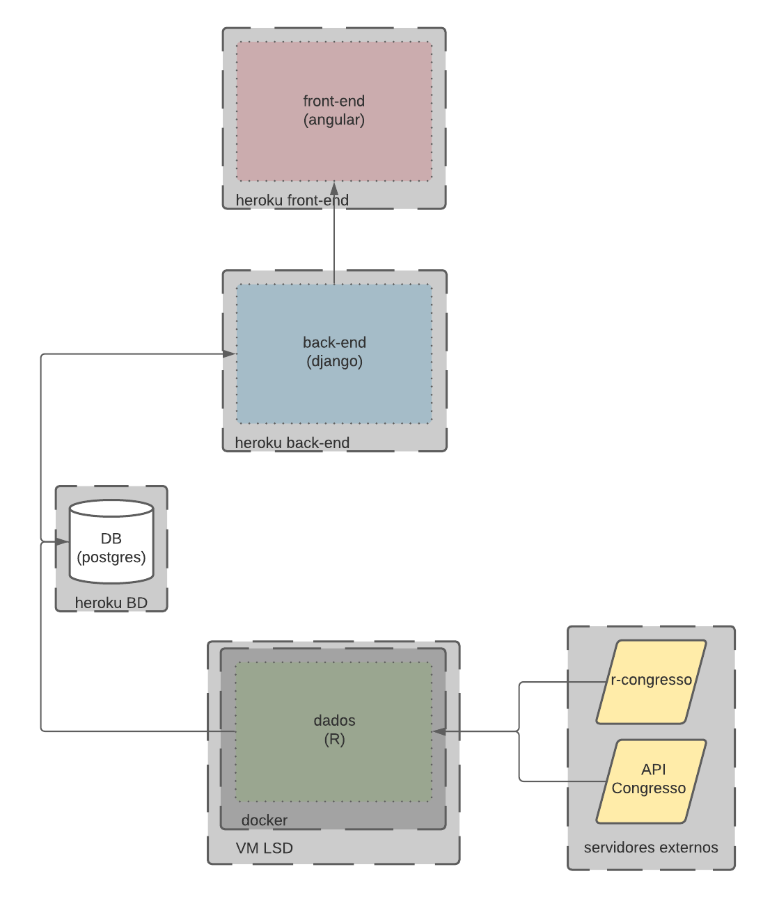
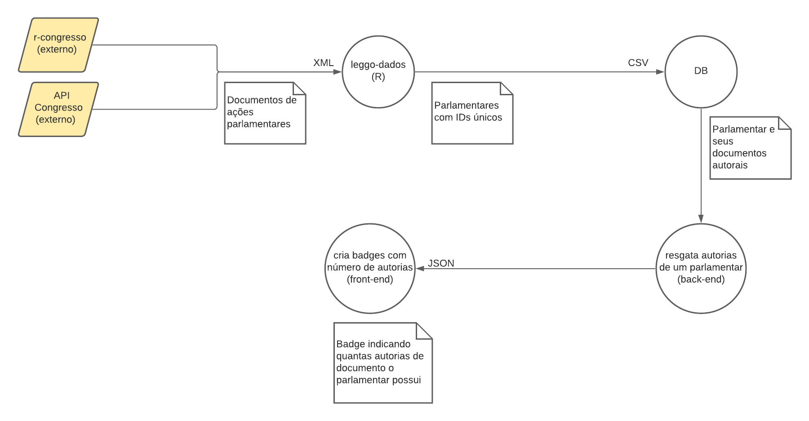

Documentação arquitetural do Leggo Painel
Autor
Este documento foi produzido por João Lucas Galvão Menezes.
- Matrícula: 116110464
- Contato: joao.menezes@ccc.ufcg.edu.br
- Projeto documentado: https://github.com/parlametria/leggo-painel
Descrição Arquitetural – Site Leggo Painel
Este documento descreve parte da arquitetura do projeto Leggo Painel. Essa descrição foi baseada principalmente no modelo C4.
É importante destacar não será descrita toda a arquitetura do Leggo. O foco aqui é a descrição da página específica de análise de atividade parlamentar, que é parte fundamental do projeto.
Descrição Geral sobre o Leggo
O leggo é um projeto que tem como objetivo permitir o acompanhamento das atividades realizadas por cada deputado e senador no congresso, quais as suas principais áreas de atuação e sua relevância, a partir de ações feitas, dentro do congresso.
A página Leggo Painel
Objetivo Geral
Implementar um serviço para permitir a fácil visualização das atividades de cada parlamentar no Congresso.
Objetivos Específicos
Queremos mostrar a atividade dos parlamentares através de seus documentos apresentados na Câmara ou Senado. Fazemos isso com contagens e avaliações dos pesos de participação que o parlamentar teve em cada documento, sendo esses autorias, emendas, proposições, apensamentos ou requisições. Mostramos também ordenações dos mais ativos em documentos, em redes social e por peso político.
Contexto
O Leggo Painel recebe os dados de um outro serviço de coleta de dados do Congresso, o r-congresso, e também direto da API do Congresso e pré-processa todos os dados antes de armazena-los. Nosso back-end prepara rotas e reorganiza os dados de acordo com o necessário para o uso.Com os dados adequados, produzimos as visualizações para que o usuário final consiga ler as informações passadas com naturalidade.

Containers
Temos quatro containers para abordar aqui. O container que faz obtenção dos dados, a partir da API externa do Congresso e da biblioteca r-congresso, é implementado em R e faz um pré-processamento dos dados para serem armazenados. Esse container funciona via docker em máquina virtual do LSD; O container de armazenamento de dados é implementado em postgres, implatado em um heroku próprio, e serve os dados ao back-end; O container do back-end, também implantado em heroku separado, é implementado em Django e cria as rotas que vão servir o front-end da aplicação, expondo a API e modelando ainda mais os dados; O container do front-end, que se encontra implantado no heroku próprio para ele, é implementado em Angular e faz requisições HTTP através de seus services para consumir as rotas da API.

Componentes
Temos dois componentes na parte dos dados, o fetcher e o transformador. O fetcher realiza a captura dos dados dos parlamentares da câmara e senado através das API’s externas e direciona para o transformador, onde os dados são analisados e pré-processados para seguirem para o armazenamento no banco de dados. No back-end temos mais três componentes, models, views e controllers (segunido modelo MVC). O controller é o responsável por receber as requisições do front-end e se comunicar com o model apresentando a demanda. O model responde ao controller com os dados necessários para responder a demanda e o controller envia os dados para a view. Na view acontece a formatação dos dados para o modelo e tipo aguardado na resposta da requisição. E no front-end, temos dois grandes componentes, os services e os components. Os components são de fato onde as funcionalidades do site são implementadas (filtragem de parlamentares, ordenações, criação de visualizações, normalizador de atividades, entre outras) e também o responsável por receber da interface da aplicação (site) as requisições. Já os services são a camada de contato entre front-end e back-end, ela que faz as requisições necessárias para a API.

Código
Nesta etapa não faremos diagramas que apresentam detalhes da implementação. Faremos isso mais adiante.
Visão de Informação
O Leggo Painel começa a obtenção de seus dados a partir de API’s externas. O Congresso, por exemplo, disponibiliza todas as ações, oficializadas através de um documento, de um parlamentar. Capturamos essas informações, em XML, e tratamos, para que facilite a usabilidade mais adiante no sistema, criando ID’s únicos para os parlamentares, por exemplo. Com os dados armazenados já de maneira organizada e coesa, o sistema consegue utilizar esses para suas diversas requisições e funcionalidades. Por exemplo, exibir para cada parlamentar uma badge mostrando quantos documentos autorais ele possui.
